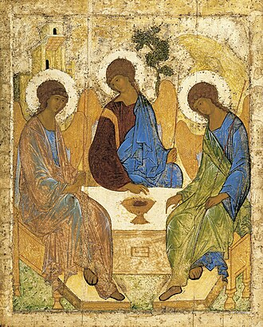
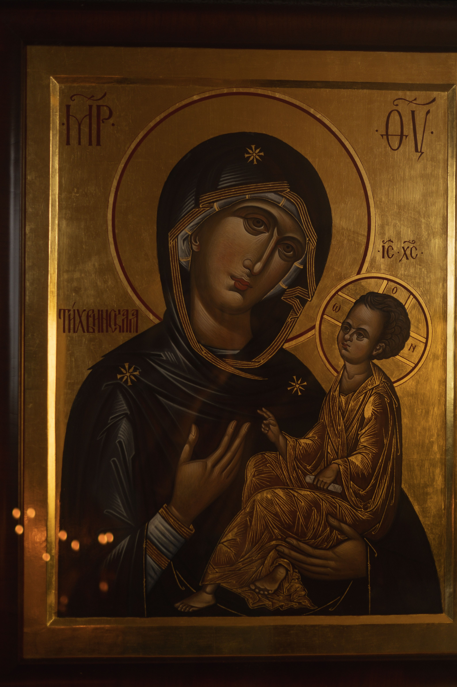
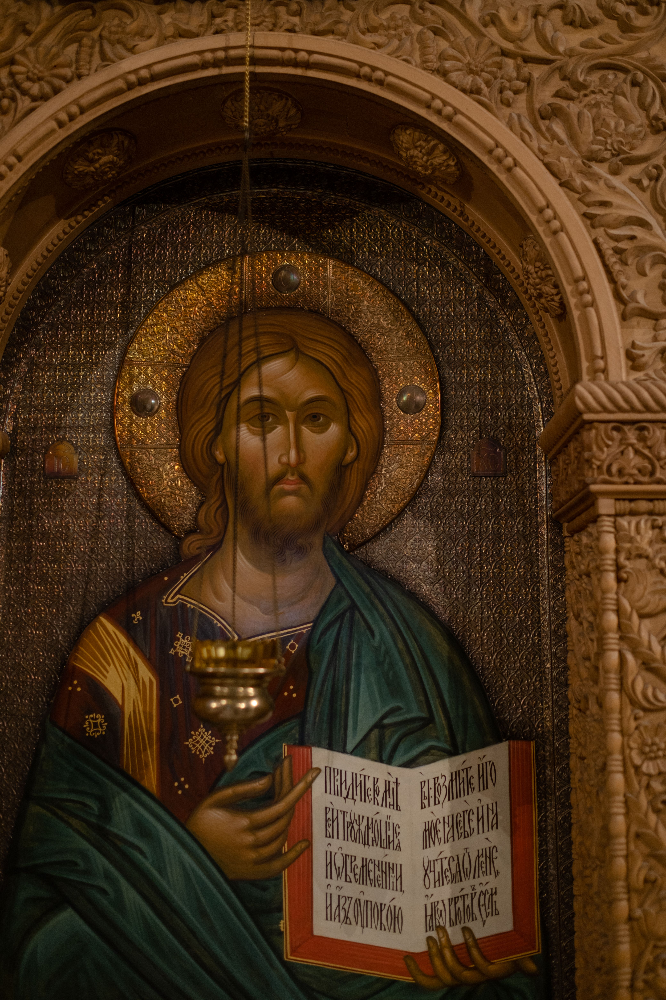
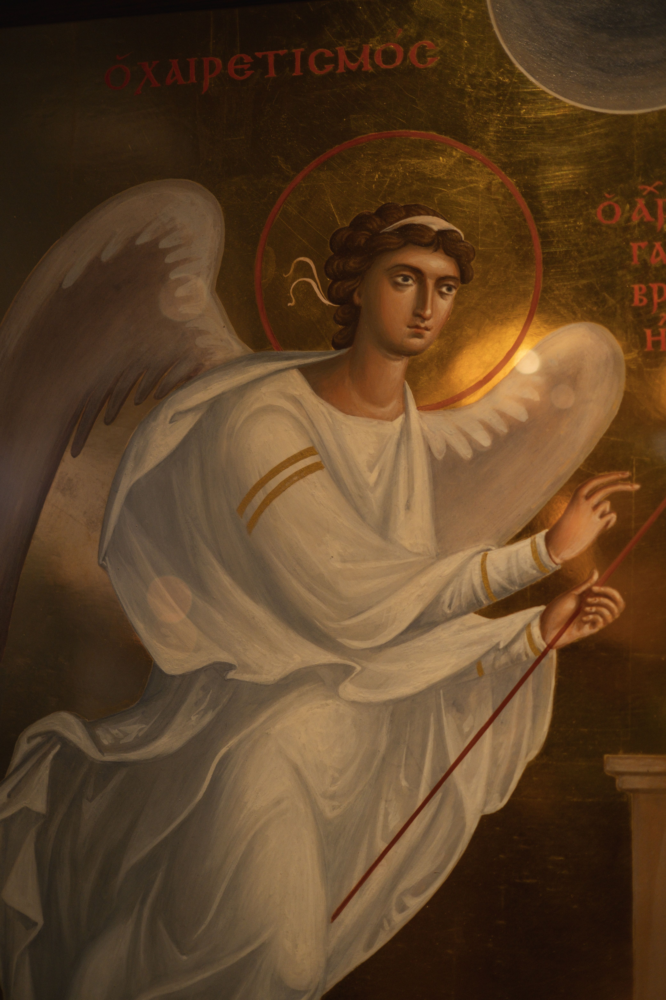

«El icono es la teología expresada en color y luz. No representa la apariencia exterior de la materia mortal, sino la creación transfigurada por la Gracia Increada.»
coros monásticos.
La salvación en la teología ortodoxa no es solo un perdón jurídico, sino un proceso de transformación ontológica mediante el cual el ser humano participa de la naturaleza divina por la gracia no creada.
Práctica espiritual contemplativa basada en la sobriedad (*nepsis*) y la repetición constante de la Oración de Jesús: «Señor Jesucristo, Hijo de Dios, ten piedad de mí, pecador».
La muralla revestida de iconos que une el Santo de los Santos con la nave. Lejos de ocultar, el iconostasio revela el misterio de la encarnación y la comunión con los santos.
Haz clic en los iconos para analizarlos con la lupa de detalles y descubrir la mística de sus proporciones y colores.




Pasa el cursor para ampliar detalleTres ángeles de idéntica figura sentados a la mesa eucarística formando un círculo perfecto. La inclinación de sus cabezas demuestra el diálogo eterno de amor e hipóstasis sin jerarquía.
En el centro de la mesa reposa la copa del sacrificio, símbolo del Cordero de Dios.
La Luz Increada de Dios, la Eternidad y el Reino Celestial sin sombras.
El Misterio de la Naturaleza Divina, la Trascendencia y el Espíritu Santo.
La Humanidad de Cristo, el Sacrificio Martirial y la Realeza Divina.
La Renovación de la Creación, la Vida en el Espíritu y la Esperanza.
Las campanas no son afinadas melódicamente, sino que producen tonos ricos en armónicos disonantes diseñados para despertar el alma.
Enciende una vela ante el altar y deja tu intención de oración. Tu luz permanecerá ardiendo en esta capilla digital.
«Por la salud y paz de mi familia en tiempos difíciles.»
«En memoria del siervo de Dios Vladimir.»